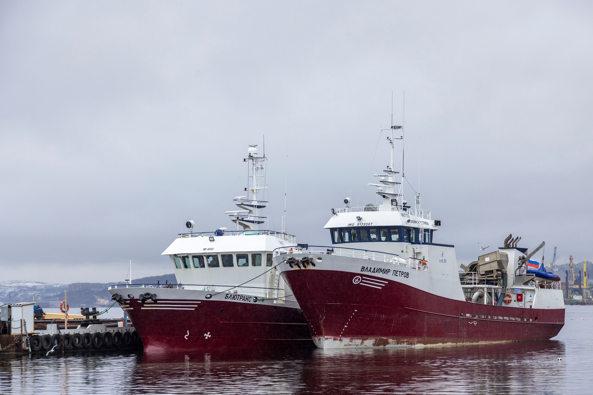

С 1997
INARCTICA — крупнейший производитель аквакультурного лосося и морской
форели в России. Для нас важно, чтобы как можно больше людей могли есть
свежую и вкусную красную рыбу. Для нас важно, чтобы как можно больше людей
могли есть свежую и вкусную красную рыбу, а популяции дикого лосося и природе
ничего не угрожало. Именно поэтому мы не ловим, а выращиваем атлантического
лосося и морскую форель во фьордах Баренцева моря и озерах Карелии.
Сегодня INARCTICA — это вертикально-интегрированная компания. Наша команда
контролирует качество продукции на каждом этапе производства — от выращивания
мальков до доставки рыбы в магазины федеральных сетей и рестораны.
Основатель
Соснов Илья Геннадьевич
Родился в 1978 году. В 1999 году окончил экономический факультет МГУ имени М.В.
Ломоносова. После учебы Соснов несколько лет работал в аудиторской компании
PricewaterhouseCoopers, затем ушел в нефтяную отрасль — последовательно занимал
должности заместителя финансового директора в ЮКОС ЭП и финансового директора в
«Салаватнефтеоргсинтезе». В 2009 году он получил должность заместителя гендиректора
по экономике и финансам в компании «Сибур — Русские шины».
Ломоносова. После учебы Соснов несколько лет работал в аудиторской компании
PricewaterhouseCoopers, затем ушел в нефтяную отрасль — последовательно занимал
должности заместителя финансового директора в ЮКОС ЭП и финансового директора в
«Салаватнефтеоргсинтезе». В 2009 году он получил должность заместителя гендиректора
по экономике и финансам в компании «Сибур — Русские шины».
Продукция
Атлантический лосось (акватория Баренцева моря).
Морская форель (акватория Баренцева моря).
Озерная форель (озера Карелии).
Краткая история
1997-2007
Становление бизнеса
В 1997 году была основана компания, ключевым направлением которой сталадистрибуция. На протяжении нескольких лет бизнес трансформировался из успешного
дистрибьютера готовой продукции в перспективного игрока на рынке аквакультуры
лососевых пород.
В 2007 году мы приобрели первые рыбоводные участки в озерах Карелии для
разведения форели, что стало отправной точкой на пути к созданию ведущего
вертикально-интегрированного бизнеса по выращиванию товарного атлантического
лосося.
2008-2016
Рост бизнеса и начало публичной истории
На этом этапе мы последовательно увеличивали число рыбоводных участков в озерахКарелии и акватории Баренцева моря с общим потенциальным объемом выращивания
свыше 30 тыс. тонн, запускали новые рыбоводные фермы, а также приобретали мощности
для первичной переработки рыбы.
В 2010 году компания провела первичное размещение своих акций на Московской бирже
(IPO), в ходе которого мы привлекли 90 млн долларов и стали первой публичной
компанией в российской рыбной отрасли.
К концу 2016 года мы продали все непрофильные дочерние структуры и полностью
сосредоточились на развитии сегмента аквакультуры.
2017-2022
Вертикальная интеграция и новый бренд
За последние 5 лет произошло становление компании как ведущеговертикально-интегрированного игрока российского рынка. Мы фокусировались на
создании инфраструктуры для выращивания малька атлантического лосося и морской
форели, приобрели рыбоперерабатывающий завод, провели вторичное размещение акций
на Московской бирже (SPO) и выплатили первые дивиденды.
В 2020 году мы запустили собственный B2C бренд охлажденной красной рыбы, а позднее
сменили название всей компании, что позволило нам завершить корпоративный ребрендинг
и объединить продукцию и бизнес под единым именем – INARCTICA.